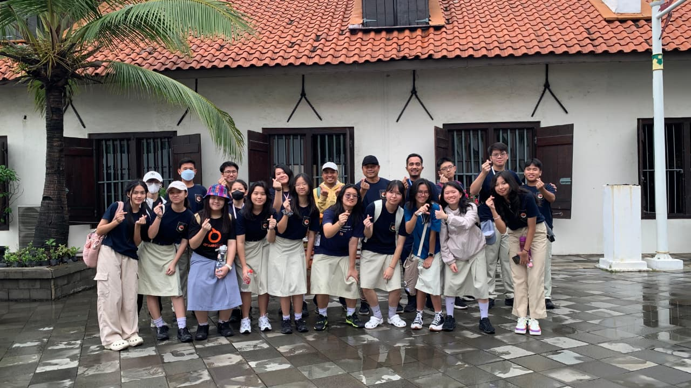
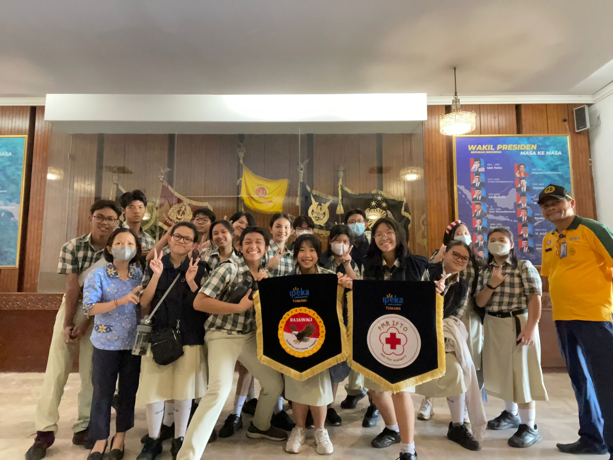

Paskibra Community
Paskibra IPTO Rajawali merupakan komunitas ekstrakurikuler di SMAK IPEKA Tomang yang berfokus pada pembinaan kedisiplinan, kepemimpinan, serta keterampilan baris-berbaris. Komunitas ini menjadi wadah bagi siswa-siswi yang ingin mengembangkan karakter tangguh, bertanggung jawab, dan memiliki jiwa nasionalisme yang tinggi.

Sejarah dan Tujuan
Paskibra IPTO Rajawali didirikan dengan tujuan untuk membentuk generasi muda yang berintegritas dan memiliki semangat kebangsaan. Melalui berbagai kegiatan latihan rutin, partisipasi dalam upacara bendera, dan dalam acara-acara lainnya, anggota dilatih untuk menjunjung tinggi nilai kedisiplinan, kerja sama, dan kepemimpinan.Paskibra Community adalah komunitas Pasukan Pengibar Bendera SMAK IPTO yang menanamkan kedisiplinan, kepemimpinan, dan rasa nasionalisme. Anggota dilatih dalam baris-berbaris, tata upacara, dan pengibaran bendera dengan penuh khidmat.
Kegiatan dan Program
Kegiatan utama Paskibra IPTO Rajawali meliputi latihan baris-berbaris secara rutin, persiapan petugas upacara, serta pelatihan fisik dan mental. Selain itu, komunitas ini juga aktif dalam berbagai kegiatan sekolah seperti upacara hari besar nasional, serta kegiatan exhibition tahunan.
Manfaat Bergabung

Dengan bergabung dalam Paskibra IPTO Rajawali, anggota akan memperoleh banyak manfaat seperti peningkatan kedisiplinan, kemampuan kerja sama tim, serta kepercayaan diri. Komunitas ini juga membantu membentuk karakter yang kuat dan siap menghadapi tantangan di masa depan.